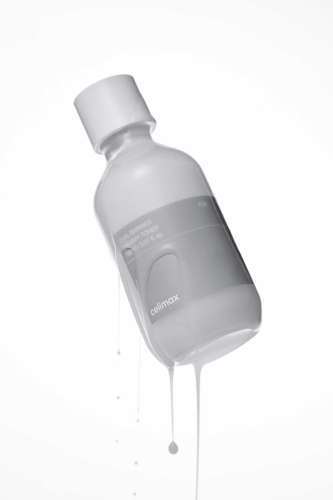
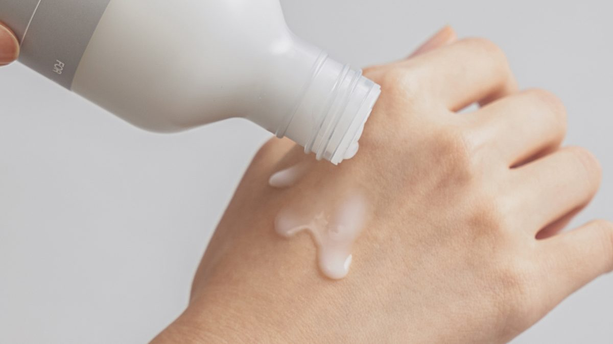
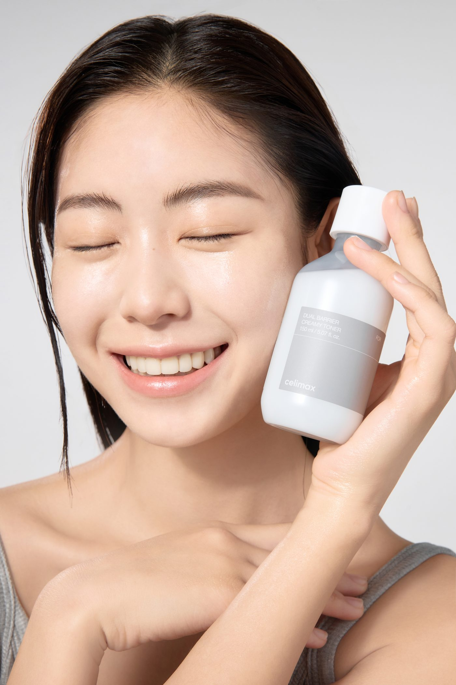
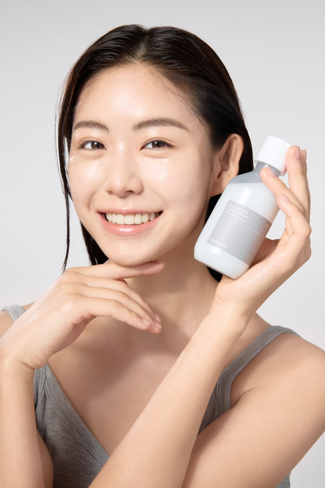
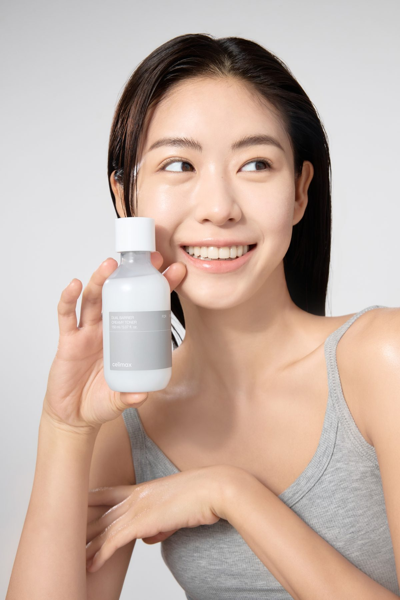
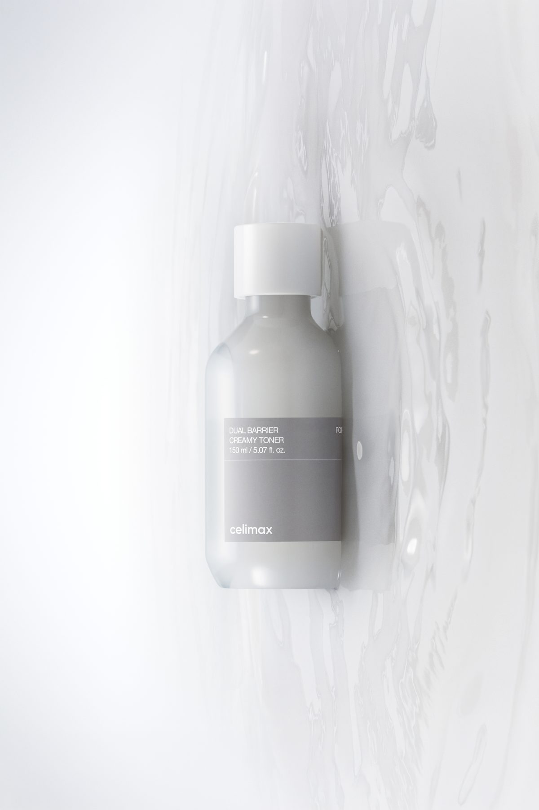

Кремовый тонер, что открывает коже путь к влаге — мягко, без пощипывания.

Когда барьер ослаблен, кожа теряет влагу, стягивается и легко краснеет. Dual Barrier укрепляет её и снаружи, и изнутри.

*Клинический тест первичной раздражающей способности, клинический центр SKINMED, окт. 2023, 30 человек с чувствительной кожей. Результаты индивидуальны.
5 керамидов (EOP·NP·NS·AP·AS) и холестерин «заполняют пробелы» в липидном барьере, помогая коже дольше удерживать влагу.
Пептид с патентами в 7 странах и золотом In-Cosmetics Asia 2016: не только удерживает влагу, но и помогает укрепить собственные керамиды кожи.
Аллантоин, гиалуроновая кислота и пантенол успокаивают, глубоко увлажняют и снижают ощущение стянутости.



Налейте немного средства в ладони и согрейте — тёплыми руками мягко вбейте в кожу, открывая путь для увлажнения.
В особенно сухие дни нанесите на ватный диск и приложите к сухим участкам на 30 секунд — как мини-маска.
Используйте утром и вечером первым шагом ухода: тонер → сыворотка → крем.

celimax Dual Barrier Creamy Toner · 150 мл